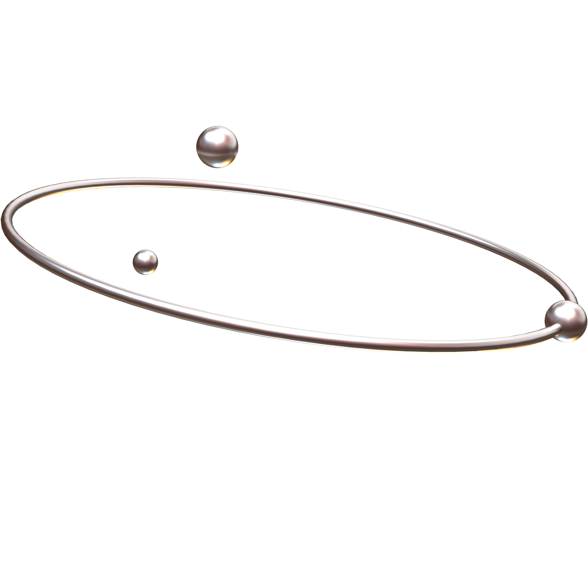
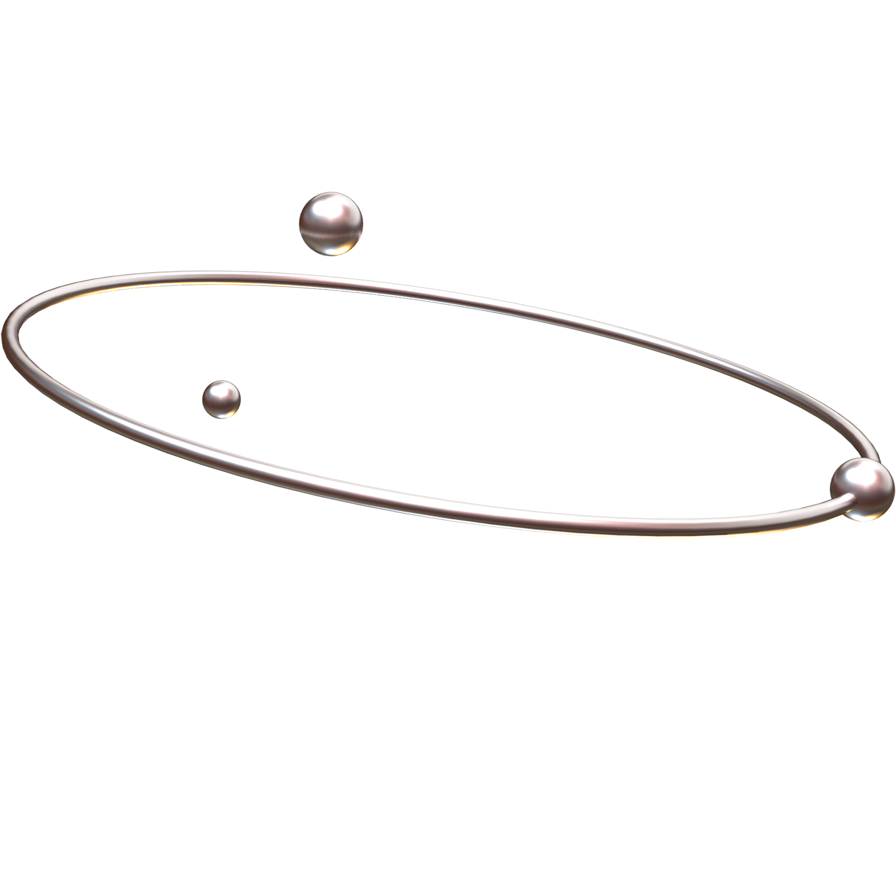

This is the circuit view of ultrasonix buzzer interactivity
we did in class. The buzzer will sound off an alarm when
something gets too close to the distance sensor. To make this
you will need: 1x ultrasonic distance sensor, 1x buzzer, and cords.
we did in class. The buzzer will sound off an alarm when
something gets too close to the distance sensor. To make this
you will need: 1x ultrasonic distance sensor, 1x buzzer, and cords.
The UNO sits beside a full-size breadboard and drives
a micro-servo motor, with jumper wires providing 5 V, ground,
and PWM control.
a micro-servo motor, with jumper wires providing 5 V, ground,
and PWM control.
This is a light sensor circuit.
When the ambient light intensity changes, the value read by analogRead() will
fluctuate. When you cover it with your hand, the light is blocked
and the analog value will drop significantly, so you can
see the value change by monitoring the serial port.
When the ambient light intensity changes, the value read by analogRead() will
fluctuate. When you cover it with your hand, the light is blocked
and the analog value will drop significantly, so you can
see the value change by monitoring the serial port.
 
